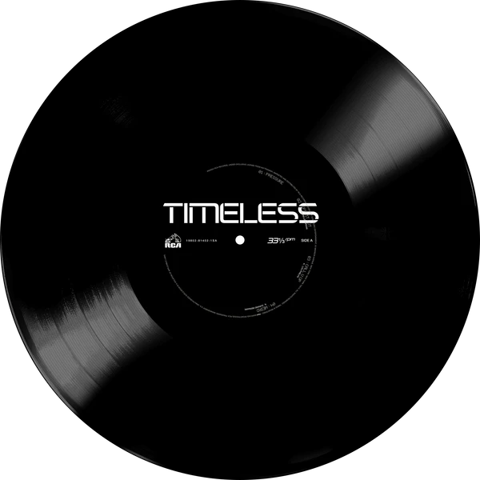

Create a Playable Album — synthesized live in your browser
Tone.js is a Web Audio framework for creating interactive music in the browser. The architecture of Tone.js aims to be familiar to both musicians and audio programmers creating web-based audio applications. On the high-level, Tone offers common DAW (digital audio workstation) features like a global transport for synchronizing and scheduling events as well as prebuilt synths and effects. Additionally, Tone provides high-performance building blocks to create your own synthesizers, effects, and complex control signals. I found this javascript looking at the previous student examples, I thought it'd be pretty cool. I wondered if there's a different approach you can take with this and the results of what i could do is below.
